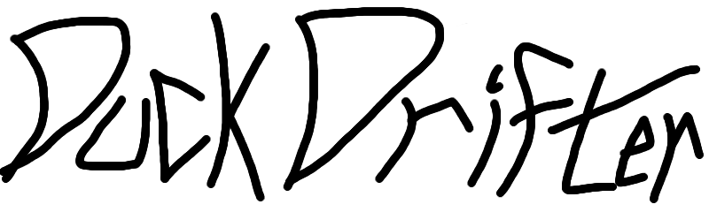

The eurobeating Duck has arrived!
Premiers when cinema is profitable with the current Corona restrictions,
So around 2024!
Directed by
MarioInATopHat
Acted by Sir Quackington the third
In a world where Ducks needs to drift in order to survive!
Drift
Eurobeat